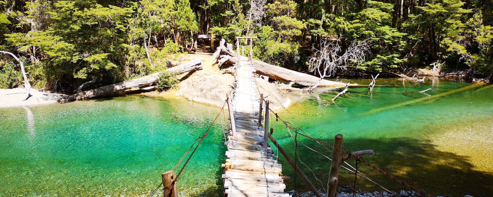
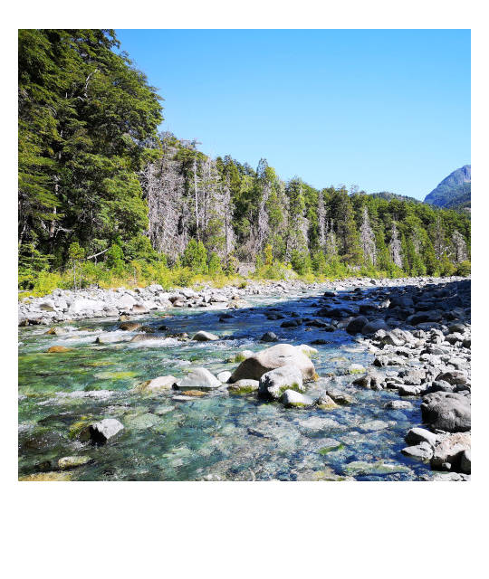

Wandern, Wandern, Wandern - Reiseführer El Bolsón -
Du möchtest die Natur in Patagonien nur für dich genießen und auch mal eine Wanderung machen, bei der man nicht alle fünf Minuten auf andere Touristen trifft. Dann ist El Bolsón deine Alternative zu den überlaufenden Zielen Torres del Paine und El Chaltén.
Schon die Fahrt von Bariloche nach El Bolsón ist ein Erlebnis an sich: Es geht durch grüne Täler voller Nadelbäume, entlang von Bergketten und es gibt keine Zivilisation weit und breit. Und dann kommt man in dem von Hippies geprägten Dorf an, welches direkt am 65.000 Hektar großen Wanderparadies namens Naturschutzgebiet Rio Azul grenzt.

ToDo
1. Wanderungen im Rio Azul Naturschutzgebiet
Ein Fluss, der so türkis ist wie das Wasser in der Karibik, der sich durch die Berge geschlungen hat, und so eine einzigartige Landschaft entstehen ließ: Das ist der Rio Azul in El Bolsón. Und genau entlang dieses Flusses, sowie der angrenzenden Berge, befindet sich das größte zusammenhängende Wandergebiet Argentiniens, mit sechszehn Refugios zum Übernachten.
Die Vielfalt der Gegend von Gletschern, über Seen, bis zum türkisblauen Rio Azul und zu grauen Felswänden ist unbegrenzt. Die Wanderwege, die nicht direkt zum Cajón del Azul führen, sind wenig frequentiert und man kann die Einsamkeit beim Wandern finden. Die Wanderung zum Cajón del Azul ist beliebt und somit frequentierter.
Eine Übersicht aller Wanderungen findet man hier. Zusätzlich gibt es im Touristenbüro in El Bolsón eine extra Wanderabteilung, wo man Empfehlungen und aktuelle Informationen zu dem Wandergebiet bekommt. Für alle Wanderungen in diesem Gebiet muss man sich zuvor bei der Behörde ANPRALE registrieren. Eine Registrierung ist an den Eingängen des Parkes oder im Internet möglich. Um Wartezeiten zu vermeiden empfiehlt sich die Registrierung im Internet: hier.
Es gibt zwei mögliche Startpunkte für die Wanderungen: Die Tagestour zum Cajon Azul startet in Wharton, sollte man eine Mehrtagestour machen kann man auch am Campingplatz „Doña Rosa“ starten. Es gibt einen Bus zu beiden Ausgangsorten. Über den genauen Abfahrtsort und die Abfahrtszeit kann man sich im Touristenoffice informieren. Alternativ kann man ein Taxi zu den Startpunkten nehmen (400 ARS für die Strecke El Bolsón zum Campingplatz „Doña Rosa“ im März 2020).
Hinweis: Im kompletten Naturschutzgebiet gibt es kein Mobilfunkempfang.
♦ ♦ ♦
Option A: Tageswanderung zum Cajón del Azul
Distanz: 16 km - Höhenmeter: 240 m - Dauer: 7 Stunden - Schwierigkeitsgrad: Mittel*
Sollte man nur wenig Zeit in El Bolsón zur Verfügung haben, ist zumindest die Wanderung zum Cajón del Azul zu empfehlen, einer Stelle des Rio Azul, wo sich der Fluss zwischen 30 Meter hohen Felsen hindurchzwängt und dabei in seinen schönsten Blautönen schimmert.
Die Wanderung führt über breite Wanderwege und man kreuzt regelmäßig den Rio Azul. Sollte das Wetter gut genug sein, lädt der Rio Azul an vielen Stellen zu einem kleinen Bad ein. Auf dem Weg und auch am Cajón del Azul gibt es Refugios, die auch Speisen und Getränke anbieten. Das Ufer des Rio Azul lädt jedoch auch zu einem herrlichen Picknick ein.
Eine Alternative zum Wandern bietet ein Ausritt zum Cajón del Azul. Eine Tour kann per Whats App unter folgendem Kontakt gebucht werden (Stand März 2020).
♦ ♦ ♦

Option B: Circuito Hielo Azul
Auf Grund der Refugios bietet sich die Gegend für eine Mehrtageswanderung an, ohne dass eine komplette Outdoorausrüstung mitgenommen werden muss. Ein Schlafsack und ein wenig Tagesproviant sind ausreichend, um mehrere Tage in der Abgelegenheit und Natur zu verschwinden. Eine Reservierung zur Übernachtung in den Refugios ist nicht notwendig.
Eine anspruchsvolle Viertageswanderung, aufgrund von vielen steilen Abstiegen, könnte sein:
Tag 1: Campingplatz „Doña Rosa“ zum Refugio „Hielo Azul“
Distanz: 12 km - Höhenmeter: 1033 m - Schwierigkeitsgrad: Mittel*
Am Morgen lässt man sich von einem Taxi zum Campingplatz „Doña Rosa“ bringen und startet dort seine Wanderung. Nachdem man ungefähr zwei Kilometern den Fluss gefolgt ist, kommt man an eine Hängebrücke, vor welcher nochmal ein ANPRALE-Mitarbeiter kontrolliert, ob man sich richtig registriert hat. Nach der Überquerung der Hängebrücke startet die richtige Wanderung durch Wälder und entlang von Flüssen. Man passiert die Aussichtpunkte „Mirador del Mallin“ und „Mirador Raquel“. Nach elf Kilometern gibt es eine Abzweigung, bei der man sich links halten muss, um zum Refugio „Hielo Azul“ zu gelangen. Das Refugio liegt in einem von einem Bach durchzogenen Tal, umringt von einer 270° Felswand.
Eine ausführliche Beschreibung auf Spanisch mit einer Karte findet man hier.

Tag 2: Refugio „Hielo Azul“ zum Refugio „El Retamal“
Distanz: 9,5 km - Höhenmeter: 916 m (steil bergab) - Schwierigkeitsgrad: Schwer*
Die Höhenmeter die man am Tag zuvor gut gemacht hat, wird man an diesem wieder heruntersteigen. Zu Beginn der Wanderung muss man ungefähr einen Kilometer zurück, bis zu der Abzweigung vom Vortag, laufen und sich dann in Richtung Refugio Natación aufmachen. Zu Beginn dieses Tages gibt es noch einige kleine Aufstiege, bis man am Refugio Natación mit seinem großen See ankommt. Den See muss man um queren und im Anschluss geht es für die nächsten Kilometer gemächlich bergab. Nach dem Kilometer fünf kommt ein steiler Abstieg. Dieser endet am Rio Azul und die letzten Kilometer von dort bis zum Refugio „El Retamal“ sind gemächlicher.
Das Refugio „El Retamal“ ist wunderschön auf einer Lichtung im Wald gelegen, mit einem Blick auf die Berge und von einem großen Garten umgeben.
Tag 3: Refugio „El Retamal“ zum Casa Campo
Distanz: 5 km - Höhenmeter: 124 m - Schwierigkeitsgrad: Leicht*
Besuche das Casa Campo, ein traditioneller, patagonischer Bauernhof mitten in den Bergen, weit weg von jeder Zivilisation. Man könnte an diesem Tag schon zurück nach El Bolsón wandern, allerdings lohnt sich der Besuch des Casa del Campo für die Unterkunft an sich. Kühe, Schafe und Pferde laufen auf den Wiesen um das Haus, Hunde rennen durch den Garten und es gibt eine familiäre Atmosphäre.
Nach einem gemütlichen Frühstück im Refugio „El Retamal“ ist die nur fünf Kilometer lange Wanderung, mit wenigen Höhenmetern, an diesem Tag zur Erholung gedacht. Man kann ein paar Stündchen am Rio Azul verbringen oder seinen Füßen etwas Entspannung im Garten des Casa Campo gönnen.
Auf der Wanderung an diesem Tag kreuzt man eine besonders malerische Schlucht des Rio Azul. Der Fluss zwängt sich kurz vor dem Refugio Casa Campo durch Felsen und das Wasser schimmert dort in den schönsten Türkistönen. An dieser Stelle gibt es eine Brücke über den Rio Azul, sodass man beeindruckende Fotos von dieser Stelle schießen kann.
Tag 4: Casa Campo zurück nach Wharton
Distanz: 13 km - Höhenmeter: 315 m (primär bergab) - Schwierigkeitsgrad: Leicht bis Mittel*
Am letzten Tag geht es zurück in die Zivilisation. Die Wanderung ist entspannt und entlang des gut ausgeschilderten Weges gibt es zahlreiche Refugios, um zwischendurch ein paar Pausen einzulegen.
In Wharton angekommen, gibt es die Möglichkeit den Bus oder ein Taxi zurück in die Stadt zu nehmen.
Hinweis zu den Refugios: Melde dich bei deiner Ankunft am Refugio jeweils bei den Betreibern an und am nächsten Tag vor dem Verlassen wieder ab. Es wird auf diese Weise überprüft, dass kein Wanderer verloren geht. In vielen Refugios wird kein Englisch, sondern nur Spanisch gesprochen.
♦ ♦ ♦
2. Besuche den Handwerksmarkt am See
Um den kleinen See in der Dorfmitte gibt es dienstags, donnerstags, sowie am Wochenende zwischen 10 und 17 Uhr ein Handwerksmarkt. Verkauft werden selbstgemachter Schmuck, Kleidung und viel Krimskrams. Man bekommt auf diesem Markt einen Eindruck von der im Dorf gelebten Hippiekultur. Zusätzlich gibt es auf diesem Markt eine Ecke mit Essensständen, wo man unter anderem unglaublich gute Empanadas bekommt.
♦ ♦ ♦
3. Cerro Piltriquitrón
Distanz: 9,2 km - Höhenmeter: 990 m - Schwierigkeitslevel: Mittelschwer*
Die Wanderung auf den 2260 Meter hohen Cerro Piltriquitrón wird mit einer 360° Aussicht mit Blick bis zum Cerro Tronador und dem Vulkan Osorno belohnt. Sie ist nur knapp zehn Kilometer lang, jedoch auf Grund der steilen Anstiege eine Herausforderung.
Der Startpunkt der Wanderung ist elf Kilometer außerhalb des Dorfes am Mirador „Plataforma Piltriquitron“, zu dem man am einfachsten mit einem Taxi gelangt. Nach anderthalb Kilometern kommt man am Refugio de Montaña Cerro Piltriquitrón vorbei, wo man sich mit Essen und Getränken stärken kann. Sollte man vom Dorf aus die Wanderung beginnen, gibt es dort auch eine Übernachtungsmöglichkeit im Bettenlager. Die weitere Wanderung ist ausgeschildert und im Refugio kann man zusätzlich weitere Informationen bekommen.
♦ ♦ ♦

Good to know
Anreise nach El Bolsón
Annähernd stündlich gibt es eine Busverbindung zwischen Bariloche und El Bolsón. Eine Übersicht der Zeiten und Anbieter findet sich hier. Zusätzlich gibt es Busverbindungen von El Chaltén und El Calafate aus (circa 20 Stunden).
Von A nach B in El Bolsón
El Bolsón ist ein kleines Dorf, sodass die meisten Distanzen per Fuß zurückgelegt werden können. Sollte man doch in ein nahegelegenes Dorf wie El Hoyo wollen oder zum Startpunkt einer Wanderung gibt es Busse ( Übersicht Busse und Abfahrtszeiten).
Unterkünfte in El Bolsón
Es gibt viele wunderschöne und individuelle Unterkünfte in El Bolsón. Besonders ausgefallen ist das „Earthship Patagonia“**, welches aus mehreren, sehr unterschiedlichen Gebäuden und Zelten besteht. Es gibt die Möglichkeit in mongolischen Jurten, in Tipis oder in einem Niedrigenergiehaus mit Höhlencharakter zu schlafen. Es werden Hostelbetten und Privatzimmer in diese Unterkunft angeboten und man merkt den Hippiecharakter in der kompletten Anlage.
Alternativ gibt es das Hostel „Luz Clara“**, welches einige Kilometer außerhalb von El Bolsón bei dem verschlafenen Dorf El Hoyo liegt und eine familiäre Atmosphäre mit riesigem Garten, in welchem sogar ein paar Schafe laufen, bietet. Der Besitzer kann einem sehr gute Tipps für Wanderungen in der Umgebung geben: Manchmal sogar zu so versteckten Berglagunen, die auf keinen Onlinekarten eingezeichnet sind.
Refugios bei El Bolsón
In den Bergen um El Bolsón gibt es insgesamt 16 Refugios, die über Wanderwege miteinander verbunden sind. Bei den Refugios handelt es sich um einfache Berghütten mit Bettenlagern zum Übernachten. Hierfür muss nur ein Schlafsack mitgebracht werden. Zusätzlich bieten die Hütten Verpflegung in Form von Frühstück und Abendessen an. Das Frühstück kann normalerweise zu einer beliebigen Zeit eingenommen werden, wobei es sich bei dem Abendessen um ein gemeinschaftliches Abendessen zu einer festgelegten Zeit handelt. Da allgemein in Argentinien sehr spät gegessen wird, gibt es dieses zumeist zwischen 21 und 23 Uhr. Tagsüber können kleinere Snacks in den Berghütten gekauft werden.
In den Refugios muss man sich bei seiner Ankunft jeweils bei den Betreibern anmelden und am nächsten Tag vor dem Verlassen wieder abmelden. Auf diese Weise wird überprüft, dass kein Wanderer verloren geht. In vielen Refugios wird kein Englisch, sondern nur Spanisch gesprochen.
Essen und Trinken in El Bolsón
Es gibt eine Vielzahl von guten Restaurants, Brauereien und Cafés in El Bolsón. Im „Patio Cervecero El Bolsón Centro“** gibt es, zusätzlich zu einem schönen Biergarten, abends zumeist Livemusik. Ein Café, in einem wunderschönen Garten gelegen, ist das „Paseo De Las Flores“**. Um ein ordentlich gutes Essen mit großen Portionen zu bekommen, kann man in das Restaurant „A Gusto“** gehen.


Disclaimer
* Die Schwierigkeitsgrade der einzelnen Wanderungen sind Einschätzungen. Ich habe die meisten Wanderungen auf dieser Seite gemacht und denke, dass diese Einteilungen passend sind, jedoch bin ich ein Hobbywanderer, sodass ich KEINE fachmännische Meinung abgeben kann. Die gegebenen Wetterbedingungen sollten bei der Entscheidung zu einer Wanderung immer berücksichtigt werden. Allgemein sind alle Aktivitäten dieser Seite Erfahrungen, Anregungen und Tipps. Die Verantwortung bei der Ausführung und Haftung obliegt bei dir. Alles auf dieser Seite ist nach meinem besten Wissen und Gewissen zusammengetragen, jedoch keine Garantie für Richtigkeit.
**Das genannte Unternehmen ist eine Empfehlung meinerseits. Ich habe KEINE Gegenleistung von diesem erhalten.